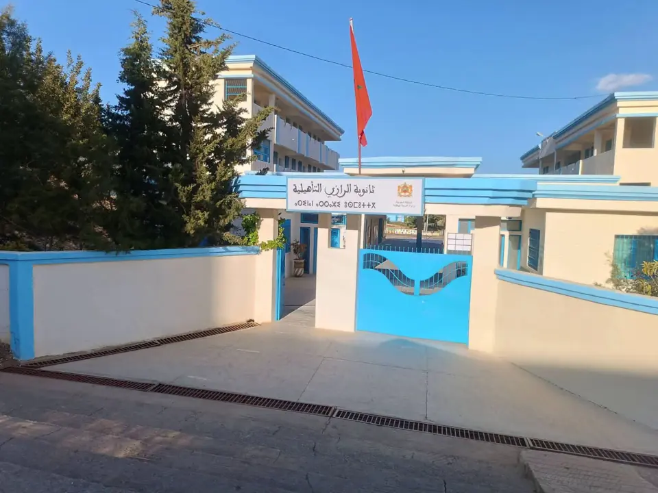

تخطي إلى المحتوى
الثانوية التأهيلية الرازي
عن المؤسسة
الاسم
الثانوية التأهيلية الرازي — Lycée Qualifiant Al-Razi
الموقع
فتح الموقع في Google Maps

التعريف الرسمي
محتوى قيد الإعداد
يُعرض هنا التعريف بالمؤسسة ورسالتها وهيكلها الإداري بعد اعتماده من الإدارة.